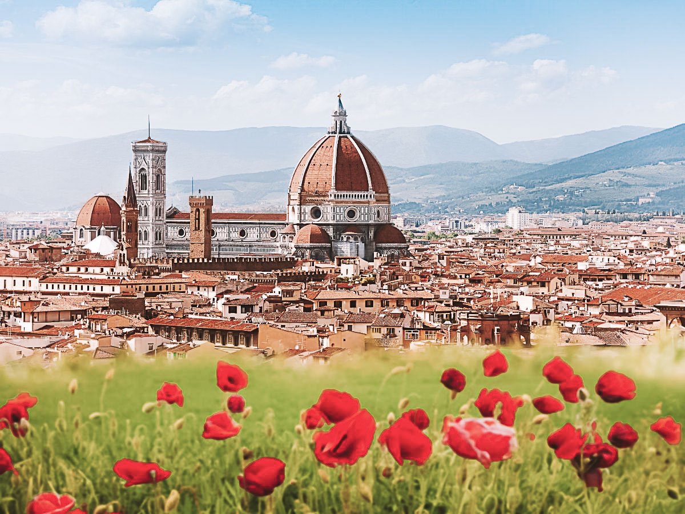
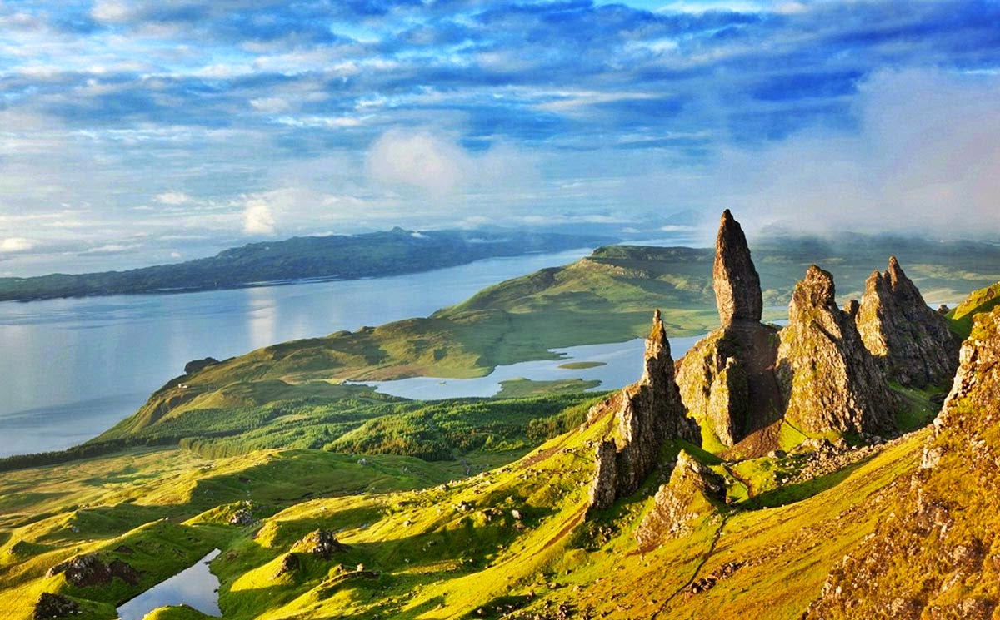

ONDE EU QUERO IR?
Existem muitos outros além desses 3, mas se eu fosse colocar em ordem de prioridades, seria assim:
| País | Motivo | Imagem |
|---|---|---|
| Itália | Uma vez eu li um livro que se passa na região de Florença e eu me apaixonei pela descrição do local. Desde então é um dos meus desejos de vida fazer a rota da Toscana, de Florença à Siena. |  |
| Escócia | Eu adoro as paisagens verde naturais da Escócia. Adoraria visitar os castelos, as montanhas e aprender um pouquinho da história de lá. Eu adoro o filme Orgulho e Preconceito de 2005 e tem uma cena lindíssima que foi gravada no topo de uma montanha na Escócia, e desde então eu quero muito visitar esse país e as paisagens belíssimas de lá. |  |
| Islândia | Um dos meus sonhos de vida é ver a Aurora Boreal, e o lugar perfeito pra isso é na Islândia. Quero ir pra lá ver as piscinas naturais, os vulcões e a natureza preservada pelos povos que moram por lá. |  |